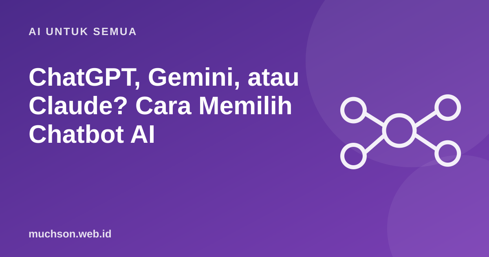

Beranda › Artikel › AI untuk Semua
AI untuk SemuaChatGPT, Gemini, atau Claude? Cara Memilih Chatbot AI
Daftar chatbot AI terus bertambah dan fiturnya berubah cepat. Alih-alih mencari yang "terbaik", lebih berguna menentukan kriteria sendiri. Dengan begitu pilihan Anda tidak mudah usang oleh pembaruan berikutnya.

Mulai dari kebutuhan, bukan merek
Lima kriteria yang bertahan lama
| Kriteria | Yang perlu ditanyakan |
|---|---|
| Kualitas untuk tugas Anda | Coba tugas nyata Anda di beberapa layanan, bandingkan hasilnya |
| Bahasa Indonesia | Apakah gaya dan ketepatannya sesuai? Uji dengan teks yang Anda kuasai |
| Privasi dan pengaturan data | Apakah ada opsi menonaktifkan penggunaan percakapan untuk pelatihan? |
| Harga dan batas pemakaian | Apa saja yang gratis, apa batasannya, berapa paket berbayarnya? |
| Fitur pendukung | Unggah dokumen, gambar, pencarian web, integrasi dengan aplikasi yang Anda pakai |
Tips tahan lama
Hasil tiap model berubah tiap beberapa bulan. Jangan terpaku pada satu merek. Cukup biasakan memeriksa jawaban dan menjaga privasi, karena itu berlaku untuk semuanya.
Tanya jawab
Mana yang paling pintar?
Tidak ada jawaban tunggal yang bertahan lama. Berbagai layanan unggul pada tugas berbeda, dan peringkatnya berubah seiring pembaruan. Uji dengan tugas nyata Anda.
Apakah perlu berlangganan berbayar?
Tidak selalu. Versi gratis cukup untuk banyak kebutuhan. Berlangganan bila Anda butuh batas pemakaian lebih tinggi atau fitur tambahan secara rutin.
Bolehkah memakai beberapa chatbot sekaligus?
Boleh dan sering berguna: bandingkan jawaban untuk topik penting sebagai cara memeriksa silang.